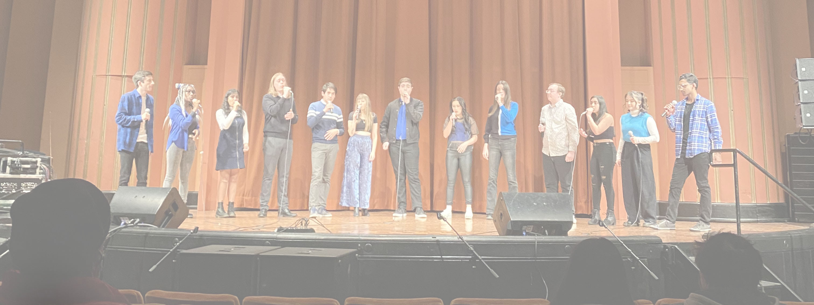
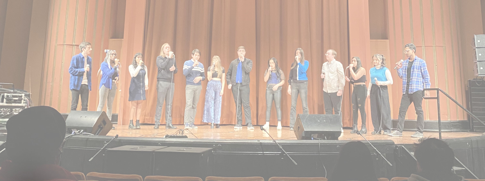
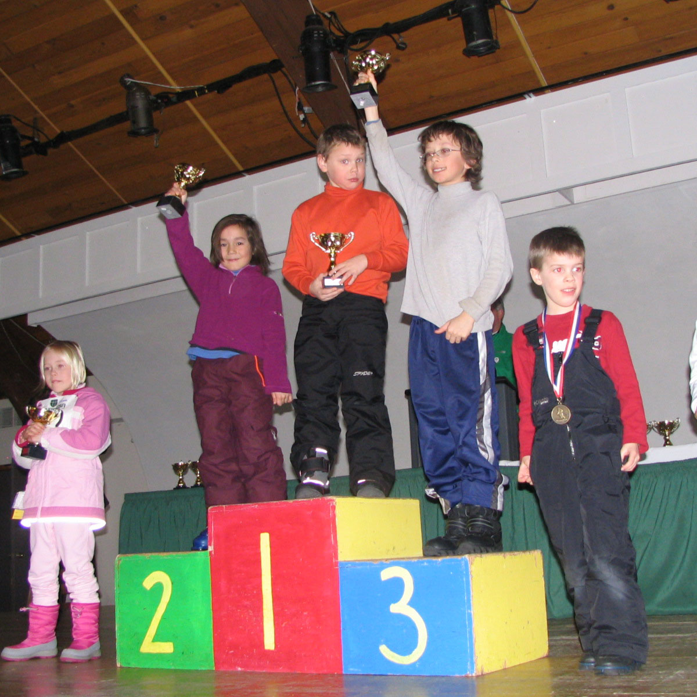
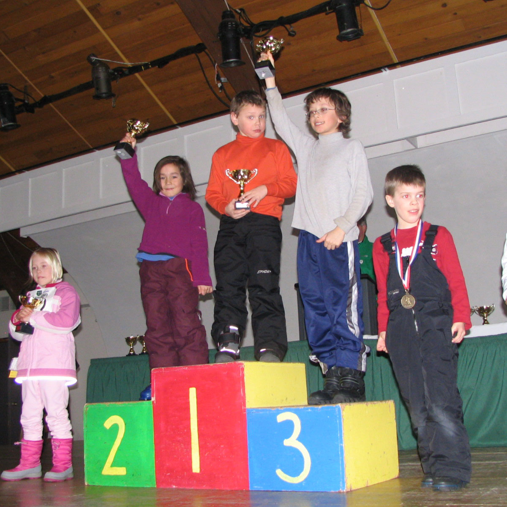

 


A little bit about what I do in my free time...I love being busy. Packing my Google Calendar is a personal hobby of mine, and as such, my personal life often blends together with my everyday life. But I wouldn't have it any other way. Below, find more about what I love!
My favorite past time, I spend upwards of 7 hours a week singing with my best friends in my a cappella group Amazin' Blue, the University of Michigan's oldest all gender a cappella group. I have been singing most of my life and the opportunity to continue singing in college has been truly Amazin'! Although this is just my first year in the group, I have already traveled to Chicago to perform and put on a fabulous fall concert, but that is just the beginning. Upcoming, I am looking forward competing at ICCAs (yes like Pitch Perfect) and at BOSS, a vocal competition in Boston. Be sure to check out Amazin' Blue on Spotify!! Outside of my aca-rehearsals, I also sing with the University of Michigan Arts Chorale, the non-major choir on campus.